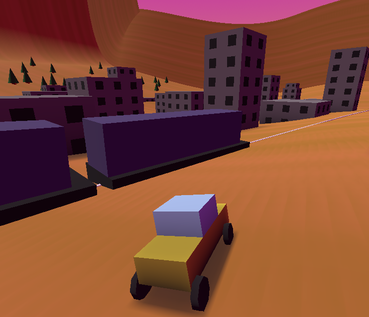

experimenting with taxis
hi all,
the past two weeks ive been building a taxi game. you can play it here: link
im especially interested in feedback on how it feels to control. there are customization options to alter the car physics, so if you play it, please let me know what you liked!
the core loop of the game has you finding and picking up passengers and delivering them to their destination. i built a small map with scattered features and set up the passengers and goals to populate randomly around the map.
the player car uses Godot's vehicle physics as a base. this is a physics object that uses "wheels" to apply force and friction. the wheels don't have any collision themselves and act more like propulsion jets - the wheels you see on the car's model are wholly seperate objects.
during customization, the player can select a weight, power, and traction setting. in an effort to make the car feel like a car, each setting controls more than the label implies.
the weight of the car is tricky. given that the wheels work like jets, it's easy to get the car sailing through the air with just a little too much power and a little too little traction. this is made even trickier by the Rev Dash, which lets the player reach top speed from a standstill. in the hope of keeping wheels on the ground, the Rev Dash increases the car's speed and traction in proportion to its weight, and not its power like you might expect.
power is the amount of force each wheel applies while the car is already in motion on a flat plane. unlike most driving games, this style of game requires the player to stop frequently, meaning players need to be able stop and go easily. to make accelerating easier, the car's power increases for the first few seconds after it leaves standstill. the car's power also increases when climbing slopes.
traction determines both how much force each wheel applies to the car and how much each wheel resists contrary forces. that resistance also functions to make the car stick to the ground. in order to create a drift, when the player applies the brake to a moving car, the front wheels gain traction and the back wheels lose traction, causing the rear to spin. after the car slows some, the rear wheels gain traction to match the front, parking the car in place.
with all that said, id probably start over completely to continue this project. Godot's physics dont give me the control id like- id prefer a more arcade-y feeling game, and i think id have to code the physics myself for that. even so, this has been a fun experiment.
thank you for reading. i hope you got something out of this. see you next time!
- ciaran